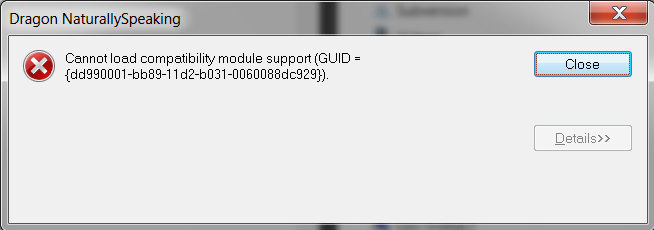
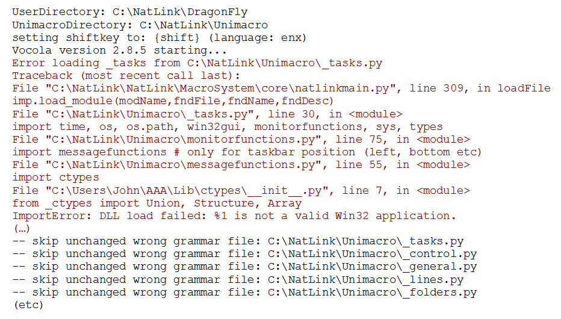

For Natlink, you need a 32-bit version of python, currently 3.7 or 3.8 (with preference to 3.8). So 37-32 or 38-32.
When you have more python versions on your system, 2.7 or 64bit, or lower 3 versions, be sure you start your config script with one of the correct versions.
Older problems:
The rest of this page is from the long python 2 history of Natlink, which gave some hard-to-tackle issues. Hopefully they will all be obsolete with the new python 3 version of Natlink.
When configuring Natlink:
Install of Dragon in a non-standard location
You installed Dragon in a non standard location, eg you invented your own path, or you installed on another drive. The configure program should warn you about this and let you specify the path where Dragon is installed. This is done via the button Change-d in the info panel of the Natlink config GUI, or via the option d of the natlinkconfigfunctions. Possibly you need to restart the config program, before proceeding.
It can also happen that you used Natlink before and specified the install path of Dragon. And now installed Dragon in a new location. In this case you should Clear-D the setting in the info panel or via the option D of the natlinkconfigfunctions program.
When starting Dragon after configuration several things can go wrong:
Cannot load compatibility module support
This is the most annoying, and sometimes hard to solve, problem, but the solution under 1. seems to fix the problem!
This can also happen when you start the Congifure GUI program. It is this message:

1. "Microsoft Visual C++ 2010 Service Pack 1 Redistributable Package MFC Security Update"
This error is reported again in the last year. It seems to be the most common cause of Natlink not starting when you start Dragon.
Installing this package could help, it goto https://www.microsoft.com/en-us/download/details.aspx?id=26999.
You need the file vcredist_x86.exe.
You can install this package, but also uninstall again if it did not help or presented problems.
It is probably wise to restart your computer after an install of uninstall of this package.
In february 2019, it was confirmed by Justin Hall that this install solved the problem, and in March 2019 again by Anatole M. Clubs (name correct?).
2. Possibly registering natlink.pyd failed.
Remove natlink.py fro the core directory (eg. C:\Natlink\Natlink\MacroSystem\core).
Re-run the config program, hopefully this now works.
If these steps fail, try to do it manually:
Close Dragon
Go to the subdirectory PYD of the Core directory.
Copy the correct file from the PYD subdirectory into the core directory, and rename the file to natlink.pyd. 2.5, 2.6 and 2.7 referring to the python version you use, and ANSI for Dragon up to version 11, UNICODE for Dragon 12, 13, 14, and Ver15 for version 15.
Rename this file to natlink.pyd
This is the "dll" file with which NatLink communicates with Dragon.
Manually tweak the natlinkstatus.ini file: the line NatlinkPydRegistered = 27;15 should hold something like this, 27 being python2.7 and 15 being Dragon 15.
You can register this file to windows manually after you close Dragon. See the short video:
Finally restart Dragon. Maybe your problem is solved.
3. Maybe there is something wrong with the dll file msvcr100.dll
I believe above step should have solved this dll problem, correct me if I am wrong.
If you suspect this, try the following steps:
Probably these steps are outdated, so try these only if you know what you are doing
goto the natlink core directory (eg C:\NatLink\NatLink\MacroSystem\core) and then
goto the subdirectory msvcr100fix.
read the README.txt
Restart Dragon. Hopefully it works.
"No valid DNS INI files Dir found"
These should automatically found by the configure program. If not, they can be specified in the info panel of the configure GUI, or with the "c" option in the natlinkconfigfunctions.py program. Should not happen in recent versions of Dragon though.
The most probable path is C:\ProgramData\Application Data\Nuance\NaturallySpeaking12 (Dragon 12)
This should be fixed with version 4.1quebec.
Most grammar files do not start.
You see this in the Messages window like:

A possible fix is running the script start_postinstallscript_pywin32.cmd in admin mode. You can find this file in the directory ...\natlink\natlink\confignatlinkvocolaunimacro. Right click on the file and Run as Administator.
If you changed your python version, eg from 2.5 to 2.7 running the Config program should note this and do the necessary changes.
Take the Basic actions above, and check your python version in the info panel of the configure program.
Configuration GUI or Configuration CLI do not run
It can happen that the python shortcut has been changed. You can either:
Open start_configurenatlink.py or start_natlinkconfigfunctions.py in IDLE and run from there
Assign python.exe to the start_configurenatlink.py file (or any .py python file) by right clicking on the file (in an explorer window), and choose Open with, Choose default program, and then choose python.exe.
A lot of effort has been put in working away at us and catching them properly. If this still prevents the configure program from running, please report.
If nothing else works
You can manually disable NatLink by changing the file nsapps.ini. See page problems with NatLink, near the bottom.